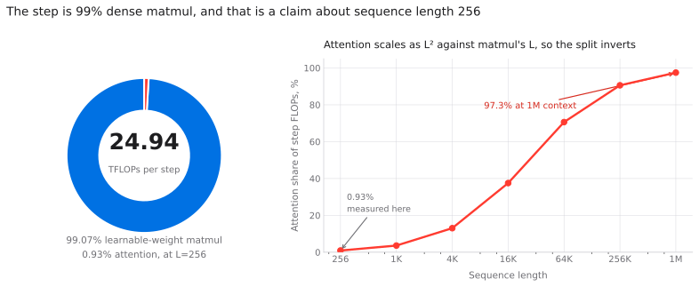
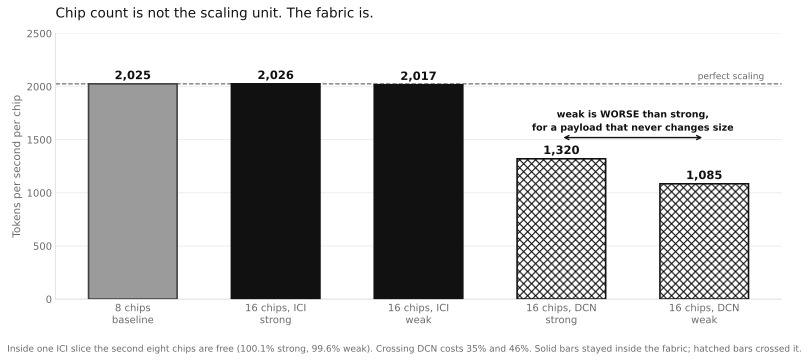
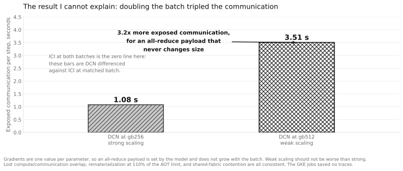
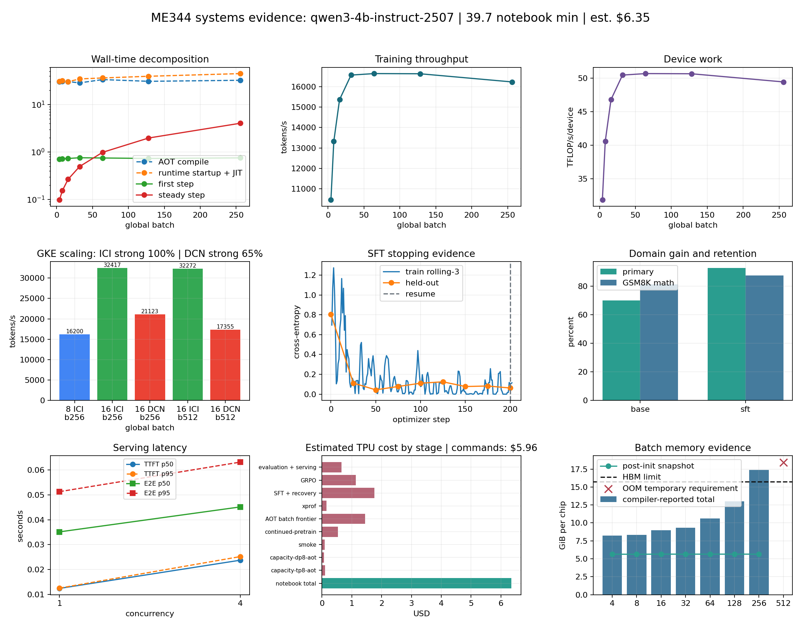

ME344 · Final Project · 13 August 2026
Train, Tune, And Scale Qwen3-4B
on a TPU v5e-8
Plan the memory before running it, find the batch boundary, profile the step,
fine-tune and recover, evaluate the behavior change, then compare ICI against DCN scaling.
Hardware
8
v5e chips, one host, 2×4 ICI. 15.75 GiB XLA-reported HBM per chip,
197 BF16 TFLOP/s peak.
Model
4,022,468,096
Qwen3-4B parameters. BF16 checkpoint 7.49 GiB.
Run
qanh-20260813t194806z
MaxText pinned at 17c7172. 19:48Z to 20:28Z, about 40 minutes.
AOT capacity→
batch frontier→
XProf→
SFT 200 steps→
resume→
GRPO→
eval + serve→
GKE ICI vs DCN
Every number in this deck is traceable. Each slide names the artifact file
it was read from, all under artifacts/qanh-20260813t194806z/.
The executed notebook re-derives them and prints the same file paths.
this slide: config.json, capacity_report.json (hardware, model)
Question 1
Will the first training step fit, before I pay for it?
Ahead-of-time compilation answers the memory question without holding the chips.
I predicted two layouts, then ran both, including one I expected to fail.
| Layout | Optimistic state shards | Predicted GiB/chip |
Prediction | Observed | AOT total GiB/chip |
|---|
| TP8 (ici_tensor_parallelism=8) | 8 |
7.49 | fit_candidate | fit | 8.23 |
| DP8 (replicated) | 1 |
59.94 | oom | oom | needs 65.47 |
The rule this validates
16 B/param
12 bytes persistent (FP32 weights 4 + two Adam moments 8) plus a
transient FP32 gradient 4. Check: 12 × 4.022e9 = 44.95 GiB,
exactly the reported persistent state.
Why TP8 survives
Tensor parallelism shards that dense persistent state eight ways.
Data parallelism replicates it on every chip, so DP8 needs the whole 59.94 GiB per chip
against 15.75 available.
Why run a failure on purpose
The DP8 OOM at 65.47 GiB of HLO temporaries is what makes the capacity
check credible. A formula that only ever agrees with successes has not been tested.
source: capacity_report.json (cases[].prediction / observed,
model.persistent_training_state_gib = 44.95, rough_peak_before_activations_gib = 59.94)
raw evidence: capacity-tp8-aot.log, capacity-dp8-aot.log
(RESOURCE_EXHAUSTED: ... HLO temporaries (65.47G) exceeds available HBM (15.75G))
· figure: capacity.svg
Question 2
How much work should one step hold?
Eight global batch sizes at sequence length 256, AOT-checked first, then measured.
The memory boundary and the throughput knee are four doublings apart.
Memory boundary
gb512
First shape past the wall. gb256 compiles at 110% of the AOT limit and
still runs, so the AOT total is conservative rather than exact.
Throughput knee
gb32
16,562 tokens/s at 59.4% of the limit: the smallest batch within 1% of
peak. gb64 buys 0.4% more throughput for 13% more HBM.
Past the knee
flat, then down
gb64 and gb128 sit within noise of gb32. gb256 is 2% slower while using
86% more memory.
source: sweep_results.csv, all 8 rows
(aot_reported_total_gib_per_chip, total_tokens_per_sec, tflops_per_sec_per_device,
oom_required_temporary_gib_per_chip = 18.43)
raw evidence: sweep-aot-gb{4..512}.log, sweep-gb{4..256}.jsonl
· figure: sweep.svg
note: the gb8, gb16 and gb32 rows were absent from the earlier run's recovered log,
which made throughput look flat from gb64. With all 8 rows the knee is gb32.
Question 2, continued
How much hardware headroom is left?
Against a 6 · parameters · tokens lower bound and the published
197 BF16 TFLOP/s peak, utilization saturates near one quarter of peak.
| Global batch | Tokens/step | Compute lower bound (s) |
Measured steady step (s) | Time efficiency | % of BF16 peak |
|---|
| 4 | 1,024 | 0.0157 | 0.0979 | 16.0% | 16.2% |
| 8 | 2,048 | 0.0314 | 0.1537 | 20.4% | 20.6% |
| 16 | 4,096 | 0.0627 | 0.2666 | 23.5% | 23.7% |
| 32 | 8,192 | 0.1255 | 0.4946 | 25.4% | 25.6% |
| 64 | 16,384 | 0.2509 | 0.9849 | 25.5% | 25.7% |
| 128 | 32,768 | 0.5018 | 1.9708 | 25.5% | 25.7% |
| 256 | 65,536 | 1.0036 | 4.0386 | 24.9% | 25.1% |
The curve flattens at gb32 and never improves, so the remaining ~74% is not
recoverable by making the step bigger. It would take a different execution strategy: better
overlap, fewer rematerializations, a fused attention path. The bound is also optimistic,
assuming zero communication and zero stalls, so it is a utilization proxy rather than MFU.
source: compute_bound.json (cases[].time_efficiency_percent,
measured_peak_tflops_percent, assumptions[]) · figure: compute_bound.svg
Question 3
Where does a training step actually spend its time?


XProf, per train step
24.94 TFLOPs
99.07% learnable weight FLOPs
0.93% attention FLOPs
3 profiled steps after 3 warmup steps at sequence length 256. The
instrumented steps report implausible per-step rates (one at 2,301 TFLOP/s/device over
0.011 s), which is profiler distortion, not throughput.
What that tells the tuning story
- At sequence length 256 this is a dense-matmul workload, not an
attention-bound one.
- Attention tricks have under 1% of the step to win back, so they are the wrong lever here.
- The lever that matters is how efficiently the weight matmuls are fed, which is why
the batch sweep saturates instead of climbing.
- This 0.93% is a statement about this shape, not about the model. See the
final slide for where it inverts.
diagram: Google Cloud, "From silicon to softmax: inside the Ironwood AI stack", 2025-11-06, reproduced for teaching with attribution.
source: profile.log (Total TFLOPs: 24.94, split as 99.07%
learnable weight flops and 0.93% attention flops), profile_metrics.jsonl
invocation: xprof_command.txt · trace: xprof_profile/ (kept out of the
public site for size)
Question 4
What changed after fine-tuning?
200 SFT steps on banking77 intent classification at global batch 4,
sequence length 256, learning rate 3e-6.
| Checkpoint | n | banking77 exact | Format compliance |
Mean output tokens | GSM8K retention n | GSM8K exact |
|---|
| base (qwen3-4b-instruct-2507) | 40 | 70.0% | 100.0% |
5.40 | 16 | 81.25% |
| SFT step 202 | 40 | 92.5% | 100.0% |
5.58 | 16 | 87.5% |
| change | | +22.5 pts | +0.0 pts |
+0.18 | | +6.25 pts |
Domain gain
+22.5 pts
70.0% to 92.5% exact match, 28/40 to 37/40.
Retention
no regression
GSM8K went up 6.25 points rather than down, so the fine-tune did not
trade general ability for the domain.
Training loss
0.007942
At step 200, from 209 logged points. The earlier Aug 10 run reached
0.007942 as well, matching to six digits.
source: evaluation_results.csv (base/sft rows),
sft_metrics.jsonl (209 points, learning/loss and eval/avg_loss)
raw evidence: sft.log, inference-base.log, inference-sft.log, outputs_base.jsonl
· figure: training_curve.svg
Question 4, continued
Can we resume without starting over?
Resume evidence
| Rollback step | 200 |
| Resumed steps | 201, 202 |
| Optimizer state restored | true |
| Loss before resume | 0.007942 |
| First loss after resume | 0.012250 |
Tunix resumed at the next optimizer step rather than restarting at
step 1, and the final checkpoint still contains optimizer_state. The small loss bump
is the expected effect of re-entering the data stream, not a lost optimizer.
But the stopping rule disagrees
step 50, not 200
Best held-out loss 0.0436 at step 50, drifted to
0.0623 by step 200: six evaluation intervals with no new best.
Recommendation recorded by the run: "Stop or roll back:
held-out loss has not set a new best for 6 evaluation intervals."
So the task metric prefers step 202 and the held-out loss prefers step 50, and no task
metric was ever run against step 50. That is a real gap, not a rounding detail.
source: recovery_report.json (rollback_step, resumed_steps,
optimizer_state_evidence[], loss_before_resume, first_loss_after_resume),
training_decision.json (best_held_out_loss = 0.0436 @ step 50,
evaluation_intervals_since_best = 6, recommendation)
raw evidence: sft-resume.log, sft_resume_metrics.jsonl, checkpoint_paths.txt
Question 5
How is reward training different from SFT?
GRPO, 12 updates, 4 generations per prompt, on top of the SFT checkpoint.
| Metric | Before | After | Change |
|---|
| Exact correct | 10/16 | 12/16 | +2 examples |
| Exact accuracy | 62.50% | 75.00% | +12.5 pts |
| Format compliance | 37.50% | 93.75% | +56.25 pts |
| Mean reward | 1.0671 | 1.5309 | +0.4638 |
What GRPO reliably did
format: 6/16 → 15/16
A +56 point swing on format compliance is far too large to be sampling
noise. Reward training taught the output contract.
Training signal was healthy: 11 of 12 groups had relative signal
(91.7%), mean group reward span 1.36.
What it did not reliably do
accuracy: unstable
The +12.5 point accuracy change is two examples out of
sixteen. An identically configured earlier run (qanh-20260810t005140z) produced
-12.5 points on this same metric with the guardrail
failing.
Same config, opposite sign. That is direct evidence the accuracy effect
is not resolvable at n=16, which is why the release decision below does not rest on it.
source: rl_summary.json (pre/post correct 10/16 and 12/16,
format_accuracy_percent 37.5 and 93.75, change.mean_reward = 0.4638,
exact_accuracy_guardrail_passed = true, training_signal.*)
raw evidence: rl.log, rl_reward_events.jsonl, rl_task.py, rl_dataset_report.json
· figure: rl_reward.svg
cross-run comparison: recovered/RECOVERED_RESULTS.md, GRPO section (Aug 10 run)
Question 5, continued
How confident can a 40-example evaluation make us?
A point estimate without an interval turns random prompt variation into a
release claim. Wilson 95% intervals on the same numbers:
| Checkpoint | Successes | Observed |
Wilson 95% low | Wilson 95% high |
|---|
| base | 28/40 | 70.0% | 54.6% | 81.9% |
| SFT step 202 | 37/40 | 92.5% | 80.1% | 97.4% |
The intervals still touch
by 1.8 pts
SFT's lower bound 80.1% sits just under base's upper bound 81.9%.
The +22.5 point gain is large and almost certainly real, but this suite cannot
formally separate them.
What would settle it
97 examples
The worst-case sample size for a plus-or-minus 10 point margin.
This suite used 40.
So what is this?
a smoke test
"Treat this suite as a release smoke test; use a larger representative
set for a real launch." That is the run's own recorded decision, and I agree with it.
source: evaluation_uncertainty.json (models[].wilson_95_low_percent /
wilson_95_high_percent, worst_case_samples_for_target_margin = 97,
target_margin_percentage_points = 10, assumption, decision)
figure: evaluation_uncertainty.svg ·
caveat carried from the file: "Prompts are independent and representative; Wilson
intervals do not fix biased data."
Serving
What does the chosen checkpoint cost to serve?
| Concurrency | Requests | req/s | TTFT p50 |
Latency p50 | Latency p95 | Output tok/s | Mean out tokens |
|---|
| 1 | 8 | 26.97 | 12.5 ms | 35.1 ms | 51.2 ms | 161.8 | 6.0 |
| 4 | 8 | 75.48 | 23.8 ms | 45.1 ms | 63.1 ms | 452.9 | 6.0 |
Concurrency trade
2.80× / 1.91×
4× concurrency buys 2.80× throughput for 1.91× TTFT.
Worth taking for a batch workload, a judgement call for an interactive one.
What this actually measures
6 tokens
Mean output is 6 tokens, so this is short-generation classification.
It says nothing about long-form decoding, where KV cache growth dominates.
Sample size, again
8 requests
8 requests after 8 warmup requests. p95 over 8 samples is the second
slowest request, so treat the tail number as indicative only.
source: serving_results.csv (requests_per_second, ttft_p50_seconds,
latency_p50_seconds, latency_p95_seconds, output_tokens_per_second, mean_output_tokens,
usage_reported_for_all = True)
raw evidence: inference-sft.log (vLLM server on the SFT step 202 checkpoint)
Question 6
Can the same checkpoint run on more workers?
Five GKE JobSet runs: an 8-chip baseline, then 16 chips two ways, inside one
ICI slice and across two slices over DCN.


| Run | Chips | Fabric | Topology | Slices |
Batch | s/step | tokens/s | tokens/s/chip | Efficiency |
|---|
| baseline | 8 | ICI | 2×4 | 1 | 256 |
4.045 | 16,200 | 2,025 | reference |
| ici_strong | 16 | ICI | 4×4 | 1 | 256 |
2.022 | 32,417 | 2,026 | 100.1% |
| ici_weak | 16 | ICI | 4×4 | 1 | 512 |
4.061 | 32,272 | 2,017 | 99.6% |
| strong | 16 | DCN | 2×(2×4) | 2 | 256 |
3.104 | 21,123 | 1,320 | 65.2% |
| weak | 16 | DCN | 2×(2×4) | 2 | 512 |
7.553 | 17,355 | 1,085 | 53.6% |
Inside one slice
~100%
Doubling chips over ICI doubles throughput. Per-chip rate moves from
2,025 to 2,026 tokens/s: unchanged to within 0.5%.
Across two slices
-35% / -46%
Same 16 chips, same work, but the data-parallel gradient all-reduce now
crosses DCN. ICI beats DCN by 1.53× strong and 1.86× weak.
The lesson
Chip count is not the scaling unit. The fabric the collective crosses is.
Fill the ICI slice before adding a second one.
diagram: Google Cloud, "How to scale AI training to up to tens of thousands of Cloud TPU chips with Multislice", 2023-08-31, reproduced for teaching with attribution.
source: scale_out.json (per-mode chips/fabric/topology/steady_step_seconds/
tokens_per_second_per_chip, ici_strong_scaling_efficiency_percent = 100.05,
weak_scaling_efficiency_percent = 53.56, ici_over_dcn_weak_ratio = 1.86)
provenance caveat: these five JobSet results were
produced on 2026-08-10 and reused into this run. Every result file records
source_checkpoint = .../me344-qanh-20260810t005140z-c4/checkpoints/4/items,
and collect_scale_results() validates only student_id, so nothing
in the pipeline checks checkpoint identity. Same model, batches and layout, different
checkpoint instance.
The anomaly worth explaining, not asserting
Why is DCN weak scaling worse per chip than DCN strong?
With DP2 × TP8 the cross-slice all-reduce carries gradients, whose size is set
by the model rather than the batch. Doubling per-slice work should amortize a fixed cost
better, not worse.


Backing out exposed communication
| Case | DCN s/step | ICI s/step | Exposed |
|---|
| strong (gb256) | 3.104 | 2.022 | 1.08 s |
| weak (gb512) | 7.553 | 4.045 | 3.51 s |
Same payload, 3.2× the exposed cost. That is the
thing a fixed-size all-reduce should not do, which is why I am treating it as an open
question rather than a result.
Three candidates I cannot separate
- Lost overlap. At per-slice batch 256 the schedule may stop hiding
the all-reduce behind compute.
- HBM pressure. gb256 on one slice already compiles at 110% of the
AOT limit, so rematerialization may be lengthening the step.
- Shared-fabric contention. These ran 01:37Z to 01:58Z while other
students were on the same DCN.
The GKE jobs saved no XProf traces, so the evidence that would
distinguish these does not exist. Naming a single cause here would be a guess dressed
as a finding.
diagram: Google Cloud, "How to scale AI training to up to tens of thousands of Cloud TPU chips with Multislice", 2023-08-31, reproduced for teaching with attribution.
derived from: scale_out.json steady_step_seconds, differencing DCN
against ICI at matched global batch (strong 3.104 - 2.022; weak 7.553 - 4.045).
Re-derived in the notebook, section 10.
missing evidence: no xprof_profile/ under the GKE result files, unlike the local
run's capture
The submitted artifact
Nine panels, one figure

source: systems_dashboard.png, built by
project.build_dashboard() from sweep_results.csv, sft_metrics.jsonl,
sft_resume_metrics.jsonl, evaluation_results.csv, serving_results.csv,
recovery_report.json, scale_out.json and cost_ledger.csv.
This figure plus answers.md is the entire Canvas submission:
qanh-20260813t194806z.final.tar.gz, 325 KiB, uploaded to
gs://me344-tpu-labs-west4/final_projects/qanh/submission/ at 20:32:45Z.
What it took
Where the 40 minutes and the $5.96 went
Wall-clock per notebook cell from the driver's own progress log, next to the
estimated TPU cost per stage from the cost ledger.
Wall clock per cell
| Cell | What it does | Duration |
|---|
| 11 | batch/HBM frontier sweep, 8 shapes | 9m 05s |
| 22 | SFT, 200 steps | 7m 27s |
| 26 | GRPO, 12 updates | 7m 10s |
| 28 | evaluation + vLLM serving | 4m 02s |
| 9 | smoke + continued pre-training | 3m 58s |
| 24 | resume from checkpoint | 3m 41s |
| 5 | device probe, both venvs | 1m 28s |
| 7 | AOT capacity lab | 1m 19s |
| 15 | XProf capture | 1m 02s |
| 36 | collect GKE results (reuse) | 0m 11s |
| 13, 20, 30, 32, 34, 38 | analysis and packaging, no TPU step | < 5s each |
19:48:15Z to 20:27:51Z, 39m 36s of measured cell time. The sweep is the
single most expensive cell because it compiles and benchmarks eight shapes, and one of
them is a deliberate OOM.
source: run_progress.log (per-cell START/DONE timestamps emitted by the
driver), cost_ledger.csv (kind=command rows, estimated_usd grouped by stage prefix)
note: two non-zero exit codes in the ledger are the deliberate DP8 and gb512 OOM
probes, not failures.
Recommendation
What would I ship?
Ship: SFT step 202
The only candidate with all three of a domain gain, no retention
regression, and a serving measurement behind it.
- banking77 exact 70.0% → 92.5%
- GSM8K retention 81.25% → 87.5%, so no regression
- format compliance held at 100%
- 27.0 req/s at concurrency 1, 75.5 req/s at concurrency 4
Do not ship: the GRPO checkpoint
Even though its guardrail passed in this run.
- Its +12.5 point accuracy change is 2 examples out of 16.
- An identical earlier config gave -12.5 points with the guardrail
failing.
- Its real, trustworthy contribution is format: 6/16 → 15/16.
Hold this as a smoke test, not a launch
The Wilson intervals for base (54.6-81.9%) and SFT (80.1-97.4%) still
overlap by 1.8 points, and a plus-or-minus 10 point margin needs 97 examples rather
than 40. A systems win is not the same as a release.
Two gaps I would close first
The DCN weak-scaling anomaly has no trace to explain it, and the
stopping rule prefers step 50, which no task metric has ever been run against.
Both are cheap to fix and both could change the conclusion.
synthesis of: evaluation_results.csv, evaluation_uncertainty.json,
rl_summary.json, serving_results.csv, training_decision.json, scale_out.json.
Written verbatim into answers.md, questions 2 and 3, and shipped in the archive.
Extrapolation
What does this pod predict about the next generation?
Two measurements from this run generalize past Qwen3-4B: the 16 bytes/parameter
memory law, and the 0.93% attention share. Both say something concrete about frontier models.

1. Memory forces you onto the slow fabric
Minimum chips to hold training state ≈ 16 bytes × params / 15.75 GiB.
Validated on this run: 4.02B needs 3.8 chips, we used 8 at 52% occupancy.
| Model | Total params | Train state | Min chips | v5e slices |
|---|
| Qwen3-4B (measured) | 4.0B | 60 GiB | 4 | <1 |
| a 72B dense | 72B | 1.07 TiB | 68 | 1 |
| Qwen 3.8 Max class | 2.4T | 35 TiB | 2,270 | 9 |
| Kimi K3 class | 2.8T | 41 TiB | 2,648 | 11 |
A v5e slice caps at 256 chips, so trillion-parameter training cannot fit
in one ICI domain. It is forced across DCN, exactly where we measured
65.2% strong and 53.6% weak. The binding constraint on this
architecture is not chips, it is that scale pushes you onto the fabric that loses
a third to a half of them. MoE does not help: every expert still needs optimizer state.
2. The batch knee is a short-sequence artifact
Attention FLOPs grow as L² while weight FLOPs grow as L, so the
measured ratio scales linearly in context length.
| Context | Attention share of step |
|---|
| 256 (measured) | 0.93% |
| 4,096 | ~13% |
| ~27,000 | ~50%, parity |
| 1,000,000 (K3-class) | ~97% |
So the gb32 knee, the 25.5%-of-peak ceiling, and "attention tricks have
under 1% to win" are all results about sequence length 256. At the
million-token contexts frontier models now advertise, the workload inverts and every
one of those conclusions would need re-measuring. Long-context and world-model training
is a different machine problem than the one I benchmarked, using the same chips.
diagram: Google Cloud, "Inside the eighth-generation TPU", 2026-04-22, reproduced for teaching with attribution.
derived from: capacity_report.json (16 bytes/param law, validated
against persistent_training_state_gib = 44.95), sweep_results.csv
(runtime_hbm_limit_gib_per_chip = 15.75), profile.log (0.93% attention at L=256),
scale_out.json (DCN efficiency).
uncertainty: the 2.4T and 2.8T parameter counts
come from secondary reporting on Qwen 3.8 Max and Kimi K3, not from model cards I verified.
The extrapolation is the load-bearing part; treat the specific parameter counts as
approximate. The L² parity estimate also ignores attention kernel efficiency and
assumes dense attention throughout.
The generation after the one I measured
TPU 8t and 8i: the first time training and inference get different silicon
Announced 2026-04-22, after this run. Google split the eighth generation in two,
and the split lands on exactly the two things this project measured: memory capacity and the
cost of a collective.


What the two block diagrams differ on
| 8t, training | 8i, inference |
|---|
| Peak FP4 | 12.6 PFLOP/s | 10.1 PFLOP/s |
| HBM | 216 GB @ 6,528 GB/s | 288 GB @ 8,601 GB/s |
| On-chip SRAM | 128 MB | 384 MB, for KV cache |
| Special unit | SparseCore, embeddings | SC-CAE, collectives |
| Topology | 3D torus, 9,600 chips | Boardfly, 1,152 chips |
| Versus Ironwood | 2.7x train per dollar | 80% better per dollar |
Why this is the answer to slides 11 and 12
- The inference part has more memory than the training part. 288 GB against
216, and more bandwidth with it. Serving a sparse model is now the harder memory
problem, which is what the 16 bytes/parameter arithmetic predicts once total
parameters outrun active ones.
- There is a collectives engine on the die. SC-CAE sits inside 8i's ICI block.
I measured a 35% penalty for one all-reduce crossing the wrong fabric; Google put
silicon on the chip to make collectives cheaper.
- 8t keeps the 3D torus, 8i does not. The all-to-all problem is being treated
as most acute during serving, which fits a world where a 2.8T model is trained once
and served constantly.
diagram: Google Cloud, "Inside the eighth-generation TPU", 2026-04-22,
reproduced for teaching with attribution.
specifications: the same article. Announced, not shipping: nobody outside Google has
measured either part, and secondary reporting adds TSMC 2nm and a late-2027 date that
Google's own page does not state.
Forward-looking · the fabric
The two fabrics they rebuilt, and which of my numbers each one answers
I measured a 35% penalty for one collective crossing the wrong fabric. Both
halves of the eighth generation are attacks on that number, from opposite directions.


What I measured
Inside one ICI slice, the second eight chips are free: 100.1% strong, 99.6%
weak. Push the same gradient all-reduce onto DCN and it falls to 65.2% and
53.6%, with exposed communication going 1.08 s to 3.51 s.
Two separate problems live in that sentence: how much bandwidth the slow fabric has,
and how many hops a message takes.
Virgo answers the bandwidth half
The scale-out fabric under the 8t racks, two-layer and fully non-blocking, with
independent planes for resilience and a path up through Jupiter and optical circuit
switching to other sites.
Google claims 4x the raw scale-out DCN bandwidth of the previous generation,
a 134,000-chip fabric at up to 47 petabits/s bisectional, and over a million
chips in one training cluster via Pathways. This is the layer my penalty was paid on.
Boardfly answers the latency half
Diagram on the right traces a worst case: two hops inside a group, an optical hop
across, then down to the destination. Seven hops, where a 3D torus needs sixteen,
for a claimed up to 50% better all-to-all latency.
Bandwidth was never the whole story for an all-to-all. Latency and hop count are, and
that is the collective MoE puts on the critical path.
diagram: Google Cloud, "Inside the eighth-generation TPU", 2026-04-22, reproduced for teaching with attribution.
tie-back: scale_out.json (65.2% and 53.6% DCN efficiency, 1.08 s against 3.51 s
exposed). Every 8t and 8i figure here is a vendor claim about unshipped hardware, not a
measurement.
Forward-looking · getting the host out of the way
Five hops become three, and storage stops going through a CPU
The least glamorous number in my run is the 3m 41s the resume cell took. This
is the path that time was spent on, and what the next generation does to it.
Top row: the old path
A tensor leaves HBM, is staged in host memory over PCIe, crosses to the other
NIC, is staged in the far host, then finally lands in the destination HBM. Five
steps, two of them CPU memory copies that do no arithmetic.
Bottom row: RDMA, and direct storage
TPUDirect RDMA goes HBM to NIC to NIC to HBM. Three steps, no host staging.
TPUDirect Storage extends that to managed storage, for a claimed 10x faster storage
access than Ironwood.
Why this is my slide, not just Google's
My checkpoints round-tripped through GCS, and the resume cell cost 3m 41s of a
40-minute run, about 9% of it, to prove optimizer state survives a restart.
I did not instrument that path, so I cannot tell you how much was host staging. That is
the honest limit: this diagram explains a cost I observed but never decomposed.
diagram: Google Cloud, "Inside the eighth-generation TPU", 2026-04-22, reproduced for teaching with attribution.
tie-back: run_progress.log (cell 24, resume from checkpoint, 3m 41s),
recovery_report.json, checkpoint_paths.txt. The 10x storage claim is Google's, unmeasured here.
The open question, now answered
Does the ceiling track HBM bandwidth? Yes.
The deck asked whether the knee follows HBM bandwidth or stays at gb32. On
2026-08-14 the same config ran on v6e and v5p, and the answer is bandwidth: every chip lands
near its bandwidth ratio, nowhere near its FLOPs ratio.
| Chip | Chips | Batch/chip | s/step | tokens/s |
tokens/s/chip | MFU | Bytes/FLOP |
|---|
| v5e | 8 | 32 | 4.039 | 16,226 | 2,028 |
25.1% | 4.16 |
| v6e | 8 | 32 | 1.870 | 35,052 | 4,382 |
11.6% | 1.79 |
| v6e | 16 | 16 | 0.962 | 68,102 | 4,256 |
11.3% | 1.79 |
| v5p | 4 | 32 | 1.372 | 23,880 | 5,969 |
31.7% | 6.02 |
ICI still nearly free, on v6e too
97.1%
8 to 16 v6e chips at fixed batch: 1.870 s to 0.962 s, a 1.943×
speedup for 2× the chips. Matches the ~100% ICI efficiency measured on v5e.
Speedup follows bandwidth, not FLOPs
2.16×
v6e has 4.66× the bf16 peak of v5e but delivered
2.16×, almost exactly its 2.00× bandwidth ratio. v5p likewise:
2.94× measured against a 3.38× bandwidth ratio.
Bytes per FLOP predicts MFU
rank-perfect
v5p 6.02 → 31.7%, v5e 4.16 → 25.1%, v6e 1.79 → 11.6%.
The fastest chip has the worst MFU, because its compute outgrew its
memory. Google's spec sheet says it plainly: v5e to v6e doubles HBM, bandwidth and ICI,
but multiplies compute by 4.66.
Two practical consequences. Never compare MFU across
generations without saying so, since the denominator moves: report tokens/s and MFU together.
And if v6e costs more than 2.16× v5e per chip-hour, v5e is the better value for this
exact config. Google's own roadmap agrees with the diagnosis: TPU 8t raises HBM from
8-high to 12-high stacks for roughly 30% more bandwidth.
source: tpu-capacity-hunter/benchmarks/RESULTS-2026-08-14.md,
identical MaxText 17c7172 config throughout (qwen3-4b-thinking-2507, seq 256, synthetic data,
learning_rate=0, FSDP off, TP capped at 8, 12 steps averaging the last 8).
provenance caveat: these four runs are TPU VM
runs on spot capacity (v5e us-south1-a, v6e us-central1-b, v5p us-east5-a), not GKE
JobSet runs, and every one is a single slice, so nothing here measures DCN on v6e. The
v5e row is an independent re-measurement that reproduces the 8-chip baseline on this deck to
within 2% (2,028 against 2,025 tokens/s/chip), which is what makes the comparison legitimate.
TP caps at 8 because Qwen3-4B has 8 KV heads, so the 16-chip run is DP2×TP8.
The result that overturns slide 2
The 25.5% ceiling was the sharding choice, not the hardware
Slide 2 chose TP8 over DP8 on a memory argument and never tested FSDP. FSDP
shards the same state, fits in the same memory, and more than doubles MFU on both chips.
| Chip | Sharding | s/step | TFLOP/s/chip |
tokens/s/chip | total tokens/s | MFU |
|---|
| v5e | TP8 | 4.039 | 49.41 | 2,028 | 16,226 |
25.1% |
| v5e | FSDP8 | 1.921 | 103.89 |
4,265 | 34,117 | 52.7% |
| v6e | TP8 | 1.870 | 106.71 | 4,381 | 35,052 |
11.6% |
| v6e | FSDP8 | 0.795 | 250.87 |
10,298 | 82,386 | 27.3% |
What TP8 was costing
-52%
Tensor parallelism all-reduces activations at every layer, and
that traffic scales with token count. FSDP all-gathers weights instead, which is
a fixed cost per step. On v5e that is 2.10×, on v6e 2.35×.
v5e reaches frontier-grade MFU
52.7%
Not 25.5%. The chip was never the problem. Published large-scale training
runs live in the 40 to 60% MFU band, and a single 8-chip v5e host gets there once the
sharding is right.
What still holds
v6e still returns only 2.10× v5e against 4.66×
the compute, under both sharding strategies. The bandwidth-tracking result is
robust. ICI efficiency at 97.1% is unaffected.
Why this was missed, and it is worth saying out
loud. The choice was framed as TP against DP, and DP genuinely does not fit: 59.94 GiB of
replicated state against 15.75 available. FSDP is the option that shards state like TP but
moves weights rather than activations, so it fits and avoids the per-token
collective. Both prior conclusions, the 25.5% plateau across an 8× batch range and the
flat sequence sweep, are consistent with this: they were all measuring the same fixed
activation-traffic cost, which no batch or sequence setting can escape, only a different
sharding strategy.
source: shardtest.log on both nodes. Identical config apart from
ici_fsdp_parallelism against ici_tensor_parallelism: 10 steps,
global batch 256, seq 256, 65,536 tokens per step, learning_rate=0, synthetic
data. Loss differs in the third decimal (493.73 against 493.26) as expected from different
collective ordering, and token count per step is identical, so the work is the same.
note: the class assignment mandates TP8, so the
graded runs keep it. This is a finding about the configuration, not a change to the
submission.
Why, from Google's own spec sheet
They doubled the memory system and quadrupled the math
Every v5e-to-v6e ratio is 2× except compute, which is 4.66×. That single
asymmetry is the whole explanation for MFU halving, and it is published, not inferred.
Published per-chip specs
| Per chip | v5e | v6e | Ratio |
|---|
| bf16 compute | 197 TFLOPs | 918 TFLOPs | 4.66× |
| int8 | 393 TOPs | 1836 TOPs | 4.67× |
| HBM capacity | 16 GB | 32 GB | 2.0× |
| HBM bandwidth | 800 GiBps | 1638 GBps | ~2.0× |
| ICI bidirectional | 400 GBps | 800 GBps | 2.0× |
| Chips per host | 8 | 8 | 1× |
| Pod size | 256 | 256 | 1× |
Our measured speedup was 2.16×, which
tracks the memory column, not the compute column.
And sequence length does not rescue it
| Seq | Batch/chip | v5e MFU | v6e MFU |
|---|
| 256 | 32 | 25.08% | 11.63% |
| 512 | 16 | 25.41% | 12.09% |
| 1024 | 8 | 25.20% | 11.83% |
| 2048 | 4 | 25.30% | 11.66% |
An 8× sequence range moves MFU by under
half a point on either chip. I predicted longer sequences would recover MFU. The
measurement says no, so the prediction is withdrawn.
Why the sweep came out flat, and what it teaches.
Tokens per step was held at 65,536, so raising sequence length forced batch down in
proportion. Arithmetic intensity depends on tokens per weight load, not on how those tokens
are arranged into batch by sequence, so the sweep held intensity fixed by construction.
Together with the original batch sweep, where MFU plateaued at 25.5% across an 8× batch
range, the conclusion is stronger than the one I started with: MFU here is pinned by the
chip's bytes-per-FLOP ratio and is nearly insensitive to how the work is shaped. That
implies activation traffic under TP8 scales with token count just as FLOPs do. The lever is
the sharding strategy or the model architecture, not the batch and sequence dials.
sources: cloud.google.com/tpu/docs/v5e and /v6e for the published specs;
seqsweep.log on both nodes for the sequence sweep (10 steps per point, last-3 average,
tokens/step fixed at 65,536). Note Google documents v5e bandwidth in GiBps and v6e in GBps,
so the bandwidth ratio is 1.9× to 2.05× depending on unit conversion. The
conclusion is unaffected: it is nowhere near 4.66×.
Next
What I would try with more time
Close the DCN question
- Re-run the two DCN trials with XProf enabled and read the collective timeline directly.
- Repeat at a per-slice batch below the 110%-of-AOT point to test the rematerialization theory.
- Run at a quiet hour to rule out contention from other students.
Make the evaluation load-bearing
- Grow the suite to the 97 examples the Wilson analysis requires for a
plus-or-minus 10 point margin.
- Evaluate the step-50 checkpoint the stopping rule prefers, which no task metric has
ever scored.
- Repeat GRPO several times to get an error bar on an effect that flipped sign
between two runs.
Push on the 74% of peak left on the table
- Since 99% of the step is weight FLOPs, test XLA flag variants that change matmul
fusion rather than attention.
- Sweep sequence length as well as batch, to find where the knee moves as attention
share grows.
Repeat the frontier on a v6e to see whether the knee tracks HBM bandwidth or
stays at gb32. Done 2026-08-14: it tracks bandwidth. v6e gave 2.16×
against a 2.00× bandwidth ratio and a 4.66× FLOPs ratio, and MFU fell to
11.6%. The sequence-length sweep is also done, and it came out flat: under half a
point of MFU across seq 256 to 2048 on both chips, so that lever is dead. What remains
is a sharding study (FSDP against TP, since TP8 activation traffic looks like the real
cost) and DCN on v6e, which needs two slices plus a Kueue flavor the class queue does
not have.
Reproducibility notes worth keeping
- SFT step-200 loss reproduced to six digits across two runs (0.007942), and the
capacity numbers reproduced exactly.
- The GRPO accuracy effect did not reproduce, and flipped sign. Same config is not
the same result when n=16.
- Artifacts died with a deleted VM once. Everything here was rebuilt from GCS plus a
re-run, which is why provenance is on every slide.
sources: training_decision.json, evaluation_uncertainty.json,
rl_summary.json, scale_out.json, and recovered/RECOVERED_RESULTS.md for the cross-run
comparison